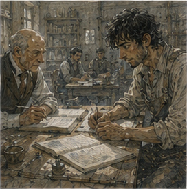
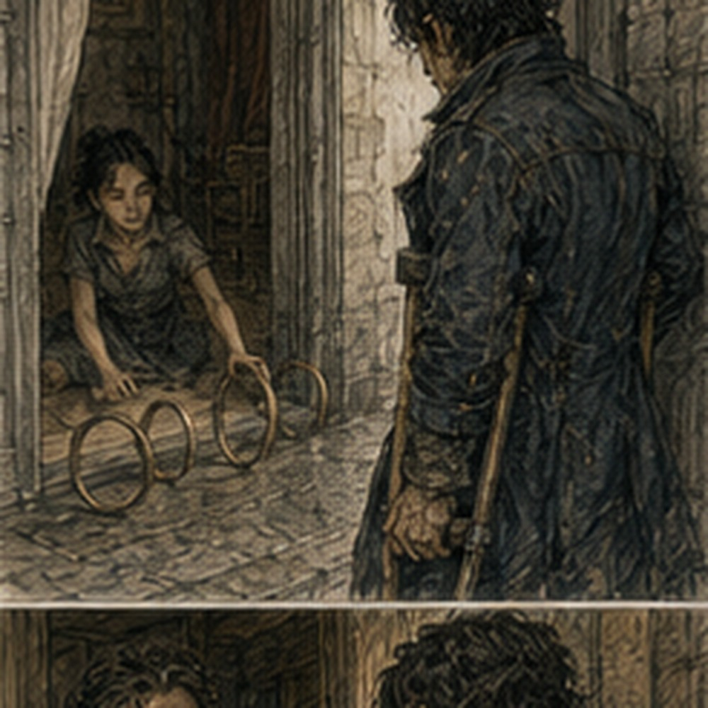

I went back to the Guild the next morning because I had left the route report there. This was not urgent. I knew that. I went anyway. The field desk was quieter than yesterday. A different clerk sat behind it, a woman with ink on the side of her hand and a stack of folded route sheets beside her. She looked up.
“Greg?”
I stopped.
“Yes.”
“Tavin left something for you.”
She reached under the desk and produced a narrow slip. I took it.
AVAILABLE FOR LANE SUPPORT
GREGORY
BRONZE
Below that, in smaller writing:
IF HE'S WILLING.
I read it twice.
“What's this?”
“Availability note.”
“For what?”
“Lane work.”
“I know that.”
She looked at me. I looked at her.
“Sorry.”
She pointed toward a chair.
“Sit.”
I sat. She pulled my report from a tray.

The original was there, folded around a second sheet.
“You wrote the repair sequence?”
“Yes.”
“Leth signed it.”
“Good.”
“He changed one line.”
I took the paper. The line about the first cart crossing had been amended.
BASE PACKED. FIRST CART PASSED WITHOUT SETTLEMENT.
Leth had added:
SECOND CART PASSED. NO SETTLEMENT.
I looked at it.
“That seems less interesting.”
“It is more useful.”
I looked at her. She tapped the page.
“If another crew gets the same road condition, they'll want to know whether the second load changed anything.”
“Ah.”
She picked up another sheet.
“And you noted that the gate queue was redirected before the repair finished.”
“Yes.”
“That matters.”
“Why?”
“Because the gate clerk didn't have to improvise.”
I looked down at the report. There were perhaps thirty words about my part in it. The rest belonged to other people. That felt correct. The clerk put it into another folder.
“That's it?”
“For the report.”
“What was the availability note?”
“Tavin's.”
“She wants me available?”
“She marked you available.”
“Without asking?”
“She asked me to ask you.”
That was better. I considered the slip.
“How often does this happen?”
“Someone gets a good report and we remember them?”
“Yes.”
“Constantly.”
“Oh.”
I had expected something more dramatic. The Guild had a memory. Not a person. A system. That was somehow more significant. She slid the slip toward me.
“Do you want your name on it?”
“For lane support?”
“Yes.”
“What happens if I say no?”
“It comes off.”
“And if I say yes?”
“We can call you when something similar comes up.”
“Does that mean I have to accept?”
“No.”
“Do I lose anything if I refuse?”
She shrugged.
“People may ask someone else next time.”
I thought about that. There it was. Not promotion. Not rank. A reputation that could be used or ignored. A little more trust. A little more opportunity. A little more temptation to turn an opportunity into an identity. I signed. The clerk took the paper.
“Good,” she said.
“That's all?” I asked.
“You expected applause?” the clerk asked.
“No.”
“Good.”
She filed it. I stood. Then she said, “Greg.” I turned.
“Eight copper from yesterday.”
“I was paid.”
“I know.”
She held out a hand. I stared at it.
“What?”
“Report fee.”
I blinked.
“What report fee?”
“Copying.”
“That was not in the contract.”
“No. It isn't charged to you.”
“Oh.”
She pointed at the folder.
“That's what you were looking at.”
“Right.”
I walked out. At the front hall I stopped. The report had not been a report about me. It had been a report the Guild could use. That was better. I went to breakfast. The stall owner from yesterday recognized me.
“Stew?”
“Yes.”
“Hand still bad?”
I looked down.
“Yes.”
“You're carrying the bowl with the other hand.”
I looked at the bowl. I was.
“Apparently I'm learning.”
“Dangerous.”
I ate standing beneath the awning. Rain began halfway through. Not much. Just enough to make the road dark and the stall roof loud. I watched people change direction. A courier pulled his hood up. A woman moved two baskets under the awning.
A boy ran through the street anyway and immediately regretted it. No emergency. Just weather. I finished the stew. The vendor held out a cloth.
“For the bowl?”
“For your hand.”
I took it.
“Thanks.”
“Don't get blood on my table.”
“I'll do my best.”
I walked toward Hessa's. I had no appointment. That was a problem. I almost turned around. Then I remembered the blister. Better to ask. Her door was open. A girl sat on the floor inside with three small wooden rings arranged in front of her. Hessa was watching. Neither looked at me. The girl picked up one ring. It rolled. She frowned.
Picked it up again. Tried. Rolled. She looked at Hessa.
“It keeps moving.”
“Yes.”
“Why?”
“You've asked me that six times.”
“Because I don't like the answer.”
Hessa smiled.
“You're allowed not to like it.”
The girl tried again. This time the ring moved two inches and stopped. She grinned. Hessa did not congratulate her. She simply said, “Again.” The girl sighed.
“Again.”
I stood in the doorway. Hessa looked at me.
“You're early.”
“I don't have an appointment.”
“You're still early.”
“Fair.”
She pointed to the wall. I leaned against it. The girl tried the ring again. It moved. Stopped. She looked at it. Then at Hessa.
“Was that better?”
“Yes.”
“How?”
“You held it longer.”
The girl thought about that.
“Oh.”
She tried again. I watched. Not because the exercise was interesting. It was. But mostly because I had forgotten what ordinary progress looked like when nobody was trying to become extraordinary. The girl had no grand plan. She wanted the ring to stop moving. That was enough. Hessa looked at my hand.
“You've been working.”
“Yesterday.”
“I can tell.”
“It is a blister.”
“It is two blisters.”
I looked. There were, in fact, two.
“That's rude.”
“Your skin?”
“Yes.”
She held out her hand. I gave her mine. She examined the palm without fuss.
“No casting today.”
“I wasn't planning to.”
“You were thinking about it.”
“I was considering it.”
“That's the same thing.”
“It isn't.”
“It is with you.”
I could argue. I didn't. She cleaned the blister with a damp cloth. It stung. I made a face. The girl on the floor looked over. Hessa noticed.

“So much for the dangerous adventurer.”
“I have suffered worse.”
“That's why I worry about you.”
I looked at her. She was already reaching for salve. Not a joke. Not a lesson. Just a statement. I let her work. The girl got the ring to stay in place. She gasped. Hessa smiled.
“There.”
“I did it.”
“You did.”
The girl looked at me.
“Do you do magic?” she asked.
“Sometimes,” I said.
“Are you good?” the girl asked.
“No,” I said.
Hessa looked up.
“That is the most sensible answer you've given me this week.”
“I am injured.”
“You're nineteen.”
“Also injured.”
The girl laughed. Hessa wrapped my hand.
“No pressure work today.”
“Tomorrow?”
“If your hand is better.”
“What about normal casting?”
“Small utility is fine if you need it. Don't invent reasons to need it.”
I nodded. The girl picked up another ring. It slipped. She swore under her breath. Hessa heard it.
“Language.”
“She said damn.”
“I said language.”
The girl sighed. I looked away so they wouldn't see me smiling. Hessa finished tying the wrap.
“Go.”
“That's it?”
“You came in with a blister.”
“And left with a blister.”
“You came in with two.”
I looked at my hand. One was mostly covered. The other was smaller.
“Medical triumph.”
“Get breakfast before noon.”
“I already did.”
“Something besides stew.”
I stared at her. She stared back.
“How do you know?”
“You smell like it.”
That was unfairly specific. I left. Outside, the rain had stopped. The street was beginning to dry. I stood beneath the eave for a moment. I had a Guild availability note. A wrapped hand. No new assignment. No revelation. No reason to be anywhere. I could go to Arlo. I could go to Dorrin Stone.
I could find out whether Varo Chemical sold processed kestrin in quantities that made sense. I could ask Antonius what he wanted done with the debt. I could find Jorren. I could find Alden.
I could find Sevren, although he was probably somewhere north carrying somebody else's package and would object to being found. All useful. None urgent. I started walking. Halfway to the market I saw the same field clerk from the Guild. She was standing beside a cart with one wheel off. A driver argued with her.
“I told you the axle was fine.”
“It isn't.”
“It was fine this morning.”
“It isn't fine now.”
She saw me. Her expression changed. Not relief. Calculation. I slowed. The driver followed her gaze.
“You know this fellow?” the driver asked.
She said, “He knows roads.” I almost corrected her. Then didn't. The driver looked at me.
“Can you tell if it's safe?” he asked.
I looked at the cart. One wheel had been removed. The axle end was exposed. A crack ran through the outer collar.
“No.”
The driver frowned.
“No?”
“No. I can tell you it's damaged.”
“I know it's damaged.”
“Then you asked the wrong question.”
The clerk covered a smile. The driver sighed.
“What do you know?”
“That you shouldn't put the wheel back on and pretend the crack isn't there.”
“I wasn't going to.”
“Good.”
He looked at the axle. Then at me.
“Can you fix it?”
“No.”
He looked almost relieved.
“Good.”
The clerk said, “There's a wheelwright two streets south.” The driver nodded. Then looked at me again.
“You coming?”
I shook my head.
“No.”
He shrugged.
“Fair.”
They went. The clerk remained.
“You could have gone.”
“I know.”
“You didn't.”
“I know.”
She studied me.
“You're getting better at that.”
“At what?”
“Leaving things alone.”
I looked down the street after the cart. I had not realized anyone had noticed.
“Maybe.”
She smiled and walked away. I stood there a moment longer. Then I went to the market. Not for sinkstone. Not for Arlo. Not for money. I bought an orange. It was expensive. I bought it anyway. I ate it walking home. It was good. That was enough.
I carried the peel home in my pocket because there was nowhere to put it. That was not a problem worth solving. I passed the corner where the north road split toward the courier yards. A pair of boys were dragging a broken handcart between them. One argued that they should fix the wheel. The other argued that they should sell it.
Neither noticed me. Good. At the next corner, a Guild runner hurried past with a stack of forms tucked beneath his coat.
“Greg!”
I turned. He was already twenty feet away.
“What?”
“Tomorrow. West gate. Nine.”
He kept running. I stared after him. Nine what? I nearly called him back. Then I didn't. If it mattered, somebody would tell me. That was a surprisingly difficult sentence to believe. I reached my room. The repaired sword leaned against the wall. The Guild slip went beside my notebook. The salve went on the table. Three objects. Three systems. No. I stopped.
That was exactly how the problem started. I took off my boots. Sat on the bed. And did nothing for a while. My hand hurt. My ribs didn't. My stomach was full. Tomorrow had something at nine. Apparently. That was enough.
For once, I did not need to know what came after it. The Guild had remembered me before I had decided whether I wanted it to. That was the part I kept turning over.
Yesterday I had been a Bronze with a yellow marker, a roadwright, and a queue of carts. Today there was a slip with my name on it because somebody had decided the first thing had been worth remembering. That was not fame. It was much smaller. It was also more dangerous.
Fame made people expect something dramatic. Reliability made people expect the same thing again. I wasn't sure which was harder. Probably the second.